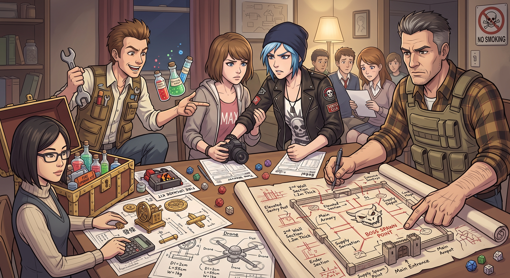

拆遷隊


一、轉職宣言
「地雷手冊我看完了,」週六下午,Chloe 一屁股坐到 Warren 家客廳的老位置,把手冊拍在桌上,語氣裡帶著蓄謀已久的興奮,「這局,我要轉職。」
「轉什麼?」Warren 好奇地湊過來。
「爆破工兵。」Chloe 咧嘴一笑,「能炸平就絕不用開鎖器,能用炸藥解決的事,絕不拔刀。」
David 從廚房端著一盤爆米花走出來,聽到這句話,腳步頓了頓,嘴角難以察覺地抽動了一下——像是既頭疼又隱隱期待。
「行,」他把爆米花放到桌上,語氣一如既往地嚴肅,「角色卡重新做,負重限制和爆破熟練度,今天開始按軍規計算。」
二、隊伍配置
這局的隊伍組合比上次更完整——Warren 這次演化成隨隊的「鍊金彈藥補給官」,揹著一整箱自製的化學燃料,滿臉興奮地想替 Chloe「升級火力」;Brooke 則轉職成「發條無人機操控師」,面前擺著一整套她自己畫的機械草圖,標注著各種精確到公分的承重計算。
「今天,」David 展開一張手繪的地圖,上面用紅筆密密麻麻地標注著等高線和建築結構,「你們要突破的是一座敵方要塞。城牆兩層,厚度按軍規計算至少一點二公尺,還有一個霸氣十足、正準備發表登場宣言的頭目。」
「頭目登場宣言不重要,」Chloe打斷他,眼睛盯著地圖上那座要塞的輪廓,「城牆結構才重要。」
Brooke 湊過來,和她一起盯著地圖,兩人的眼神裡同時亮起一種心照不宣的光。
三、力學承重點
「先偵查,」Brooke 率先開口,調出她那套「發條無人機」的規則卡,「我放出三架偵察無人機,分別掃描要塞的正面、側翼和後方地基。」
David 讀了幾個判定骰,把偵查結果一條一條念出來——牆體材質、地基深度、幾處肉眼難以察覺的結構裂縫。
Brooke 拿著這些數據,埋頭在紙上飛快演算,不多時,抬起頭,眼神裡帶著近乎藝術家般的專注。
「西南角,」她用筆尖點在地圖一處不起眼的牆角,「這裡是整座建築的力學承重樞紐,牆體結構在這裡分散了將近四成的整體荷重。如果從這個點下手,配合另外兩個對稱受力點同時起爆,理論上能觸發連鎖式結構性坍塌——不需要正面硬碰硬跟牆體對抗,只要精準破壞掉這三個支撐點,整座建築會自己把自己壓垮。」
Chloe 盯著那張標注得密密麻麻的圖紙,眼睛越來越亮。
「妳這是,」她由衷地感嘆,「拆遷界的藝術家。」
「謝謝誇獎,」Brooke 頭也不抬,「現在把妳的炸藥,精準塞進我標好的這三個點。」
四、Warren 的「貢獻」
「等等等等,」Warren 舉手打斷,一臉躍躍欲試,「威力這種事,交給我!」他翻開自己的鍊金配方筆記,語氣熱切,「我剛研發出一款新配方——硫磺加蝙蝠糞,再摻一點龍糞粉末當催化劑,理論上威力能提升整整三成!」
「威力加成,骰檢定。」David 面無表情地遞出骰子。
Warren 信心滿滿地擲出骰子,滾動幾圈,停在一個位置。
「Natural 1。」David 念出結果,語氣毫無波動,「大失敗。配方比例出錯,瞬間逆燃,你的眉毛連同半邊瀏海當場燒光。」
「什麼?!」Warren 崩潰地抱頭。
Chloe 笑得直不起腰:「這下你這鍊金術士,是要頂著光頭眉去見頭目了。」
「別笑,」Warren 哀怨地翻著角色卡,「至少配方本身沒失敗吧?」
「配方效果正常保留,」David 難得地大發慈悲,「威力加成三成,判定成立。」
「所以說,」Brooke 頭也不抬地補刀,「這就是為什麼精密拆除工程,從來不找『富有實驗精神』的業餘人士負責調配藥劑。」
五、無聲的堡壘
三個關鍵起爆點,分別由 Chloe 埋設完畢——每一包炸藥的位置,都精準對應著 Brooke 計算出的承重座標,連引信長度都經過反覆校準,確保三處能在同一秒起爆。
要塞內,頭目正踩著誇張的排場登場,清了清嗓子,準備念出一段醞釀已久的霸氣宣言:「愚蠢的入侵者,你們竟敢——」
「起爆。」Chloe 面無表情地打斷,直接按下引爆器。
David 讀著判定結果,語氣裡帶上一絲說書人般的鄭重:「三個起爆點同時炸開,牆體結構應聲斷裂,力學傳導效應瞬間擴散——整座要塞的地基,以近乎垂直的角度,朝著自身的重心轟然塌陷。」
「頭目連宣言的下半句都還沒說完,」他頓了頓,罕見地帶上一絲戲謔,「就被三層樓高的石塊活埋在瓦礫堆正中央。」
客廳裡爆出一陣哄笑,Warren 拍著桌子笑到咳嗽,Chloe 得意地朝 Brooke 舉起手掌擊掌。
「文藝復興式拆遷,」她笑得眉飛色舞,「一鏡到底,連個開場白都不給。」
「效率,」Brooke 也難得露出得意的笑容,和她重重擊掌,「才是專業拆遷隊的核心價值。」
六、收工
跑完這局,茶几上散落著薯片碎屑、幾張畫滿計算公式的圖紙,還有 Warren 那張寫著「威力加成配方(失敗版)」、被大家傳閱嘲笑了整晚的筆記。
「妳浪費了將近四成的彈藥預算,」David 一邊收拾骰子一邊評論,語氣依然嚴肅,卻少了幾分平常的挑剔,「但切角計算和引爆同步性,做得相當專業。合格的工兵苗子。」
「得了吧老頭子,」Chloe 灌了一口汽水,得意地反脣相譏,「承認吧,你設計的那個精英頭目,連一輪齊射都沒扛住,連台詞都沒念完就被活埋了。」
David 難得沒有反駁,只是嘴角微不可察地牽動了一下。
Max 坐在一旁,看著眼前這幅鬧哄哄卻格外溫暖的畫面——Chloe 拿著玩具炸藥模型,興奮地朝廚房裡端著咖啡出來的 Joyce 炫耀著今天的戰績,Joyce 一臉「我聽不太懂但還是很替妳高興」的縱容笑容;David 蹲在地上,一顆一顆仔細地把骰子按面數分類收進防震盒,嘴角始終噙著一絲若有似無的笑意。
Max 悄悄舉起相機,按下快門,把這個沒有巨龍、沒有魔法,只有精密計算與炸藥構築起來的、意外溫暖的家庭時刻,定格在了膠卷上。